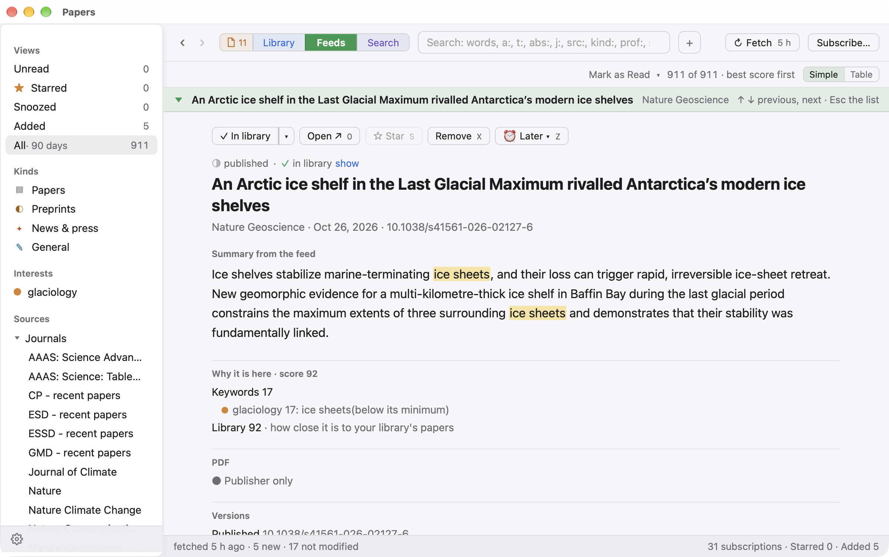
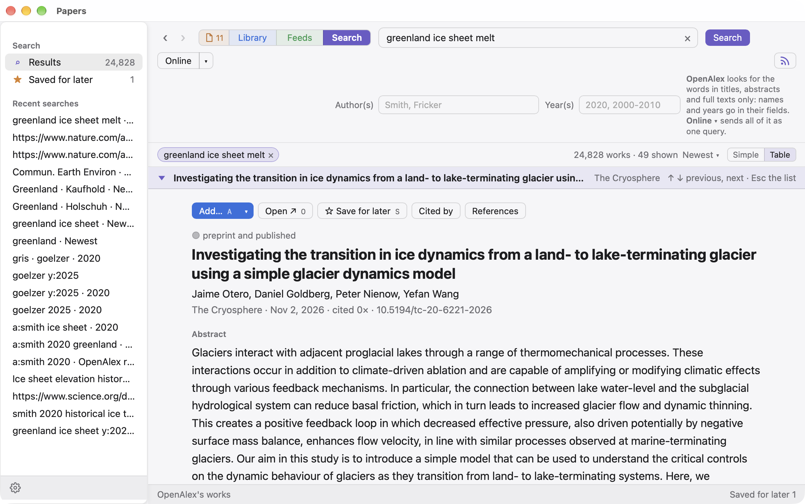
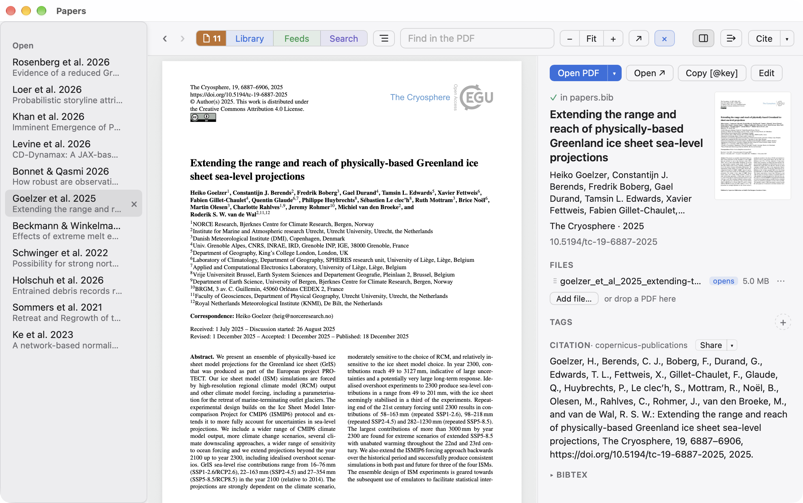
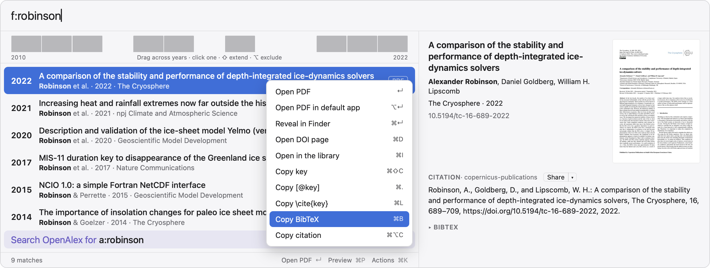

Follow
The new papers of your field, the best first
Subscribe to journals, preprint servers, news sites and blogs. Each new paper gets a score from your
keywords and from how close it is to the papers already in your library, so the ones you would read come
first, and the rest are a glance away.
Go through the list with the keys: j k to move, s to shortlist,
m to mark as read, x to hide, a to add to the library. A blog post leads
to the paper it is about; one for later can be snoozed.

Find
Search all of science
The Search tab asks OpenAlex, an open index of hundreds of millions of
works, with the same words and filters as your library: a:, y:2015-,
j:. The papers you already have are marked, and the closest ones of your library shown beside
each result.
Follow a paper's citations and references, add it in one key, or keep a search: Subscribe turns
it into a feed of the papers to come. Online ▾ sends the same query to Google Scholar, Semantic
Scholar, arXiv, PubMed and others.

Keep
Your library, in plain files
Your .bib files are the library: from papers, JabRef, BibDesk or a Zotero export. The library
window shows them in a table that the same search filters, with views (recently added, no PDF, broken file
links, possible duplicates) and your tags.
Add a paper by its DOI or arXiv id, with its free PDF; edit, tag and attach files; ⌘Z undoes
any change. Export the papers of a tag to a .bib file: the references of a manuscript.
Read
Read in tabs
Space opens a paper in a tab, its details beside it. On macOS the PDF shows as in Preview,
smooth to scroll and zoom, with find and the outline. The papers you had open come back the next time.
Everything has a key: / to search, ⌘1 ⌘2 ⌘3 for the library,
the feeds and the search, ⌃Tab from tab to tab, ⌘W to close.

Cite
Any paper, a keystroke away
Press ⌥Space in any app and type a few letters of an author, a title or a year:
rob finds Robinson, y:2010-2015 keeps those years, a pasted reference finds its
entry.
↵ opens the PDF, ⌘. copies [@key] for Markdown, ⌘L
\cite{key} for LaTeX, ⌘B the BibTeX, ⌘⌥C the citation in your style.
⌘K lists every action.

Always up to date
Change a .bib file with any tool, or let a sync client do it: the app reloads it at once.
Quick
A library of thousands of entries loads in a few tens of milliseconds, and the results follow your typing.
Citation styles
Copernicus, AGU, AMS, Nature, Science, APA and more are built in, and any
CSL style works.
Share and drag out
Copy the title as a link, the DOI or the citation, formatted where it pastes. Drag a paper out to drop its
PDF in a mail, a chat or a folder.
From any app
Select a reference anywhere and choose Services → Search Papers to find it in your library. On Linux,
press Ctrl+Alt+Shift+Space.
Out of the way
It lives in the menu bar and hides when you go back to work. The library window is in the Dock only
while it is open.
A command line too
papers-rs, the same program that writes your library, installs from the app menu. It works
with the papers command line.
Open source
Free software under the MIT license, written in Rust with Tauri. It
updates itself.